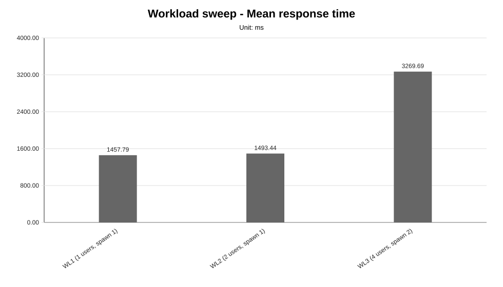
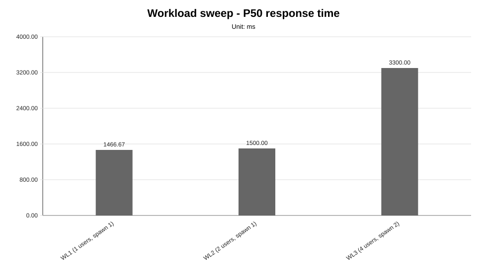
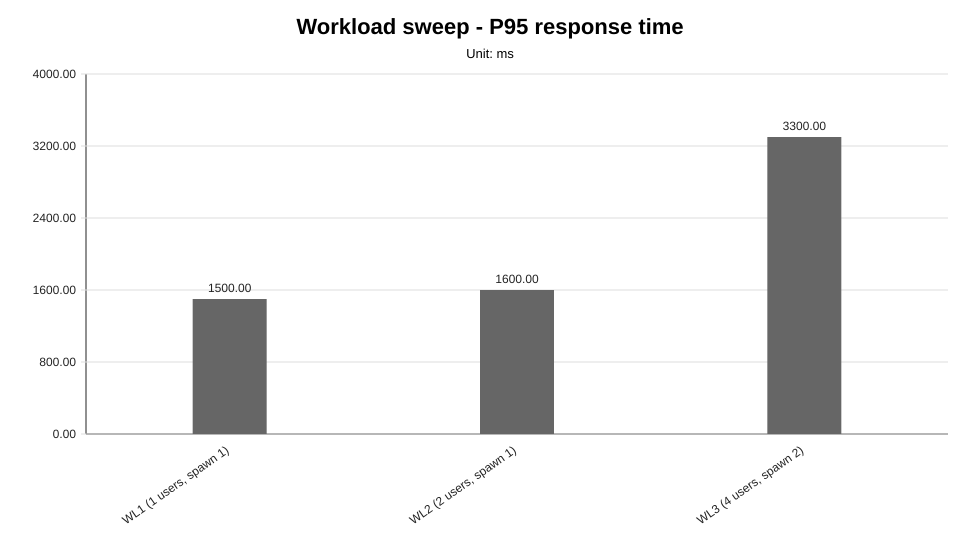
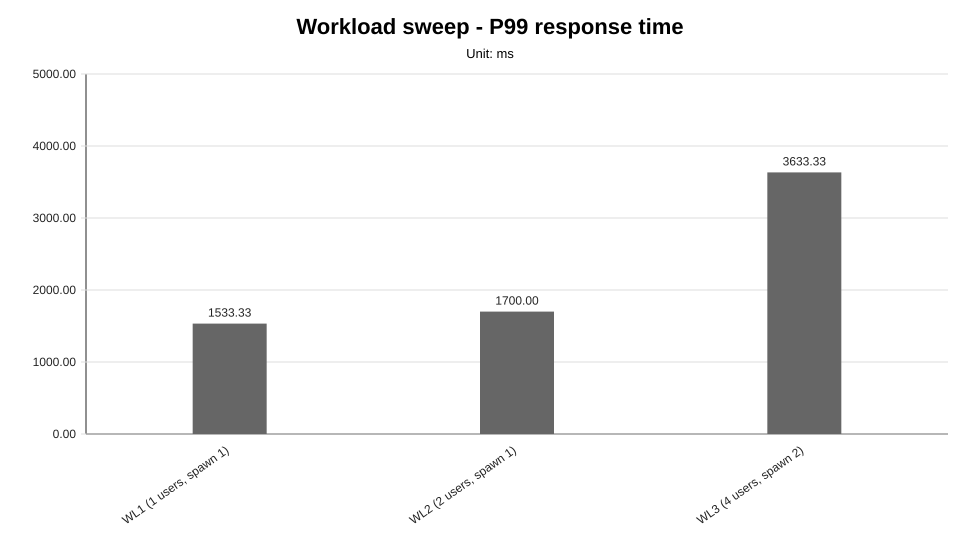
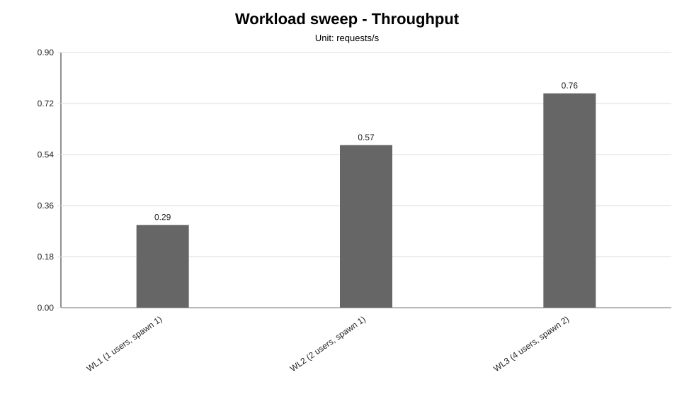
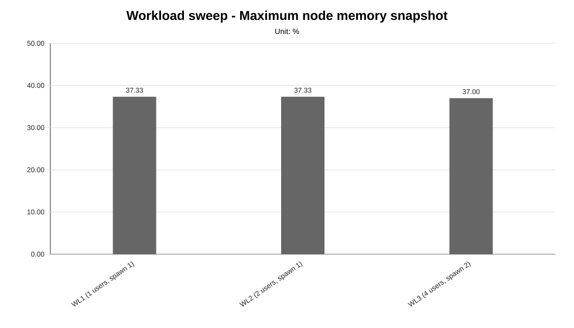

Reporting ID: analysis_reporting_all_NA_20260429T032103Z
Generated at UTC: 2026-04-29T03:21:03.257749+00:00
Back to consolidated reporting index
This sweep-specific report isolates one benchmark family so that the varied dimension, fixed dimensions, measured values, unsupported evidence and diagnosis-based reading can be inspected without navigating the full consolidated report.
Execution status: fully_measured
Execution note: All configured scenarios in this sweep have measured benchmark samples.
Varied dimension: synthetic client-side workload pattern
Fixed dimensions: baseline model, baseline worker count, baseline placement, baseline protocol.
Reference scenario within the sweep: WL2
| Scenario count | Measured | Unsupported | Missing |
|---|---|---|---|
| 3 | 3 | 0 | 0 |
| Fixed dimension | Value inherited from baseline |
|---|---|
| Model | llama-3.2-1b-instruct:q4_k_m |
| Worker count | 2 |
| Placement | colocated_sc_app_02 |
| Prompt | Reply with only READY. |
| Temperature | 0.1 |
| Request timeout | 120 s |
| Scenario | Status | Varied value (synthetic client-side workload pattern) | Model | Workers | Placement | Workload | Timeout (s) |
|---|---|---|---|---|---|---|---|
WL1 | measured | users=1, spawnRate=1, runTime=2m | llama-3.2-1b-instruct:q4_k_m | 2 | colocated_sc_app_02 | users=1, spawnRate=1, runTime=2m | 120 |
WL2 | measured | users=2, spawnRate=1, runTime=2m | llama-3.2-1b-instruct:q4_k_m | 2 | colocated_sc_app_02 | users=2, spawnRate=1, runTime=2m | 120 |
WL3 | measured | users=4, spawnRate=2, runTime=2m | llama-3.2-1b-instruct:q4_k_m | 2 | colocated_sc_app_02 | users=4, spawnRate=2, runTime=2m | 120 |
This compact table reports the core indicators used to read the sweep at a glance. Detailed percentiles, deltas and resource snapshots are reported in the following extended table.
| Scenario | Description | Status | Sample count | Mean response time (ms) | P95 response time (ms) | Throughput (requests/s) | Unsupported evidence |
|---|---|---|---|---|---|---|---|
WL1 | WL1 (1 users, spawn 1) | measured | 3 | 1457.79 | 1500.00 | 0.2918 | |
WL2 | WL2 (2 users, spawn 1) | measured | 3 | 1493.44 | 1600.00 | 0.5732 | |
WL3 | WL3 (4 users, spawn 2) | measured | 3 | 3269.69 | 3300.00 | 0.7559 |
This secondary table keeps the additional metrics aligned with the technical diagnosis while avoiding an excessively wide primary summary table.
| Scenario | P50 response time (ms) | P99 response time (ms) | Mean response time delta (%) | P95 response time delta (%) | Throughput delta (%) | Max node CPU snapshot (%) | Max node memory snapshot (%) |
|---|---|---|---|---|---|---|---|
WL1 | 1466.67 | 1533.33 | -2.39 | -6.25 | -49.09 | 17.33 | 37.33 |
WL2 | 1500.00 | 1700.00 | 0.00 | 0.00 | 0.00 | 34.67 | 37.33 |
WL3 | 3300.00 | 3633.33 | 118.94 | 106.25 | 31.87 | 50.00 | 37.00 |
strong_signal, confidence: medium).medium).





not_executed sweep means that neither measurement CSV files nor unsupported-scenario evidence were found for any configured scenario in that family.